Course Code: AIML ZG523 — Machine Learning Operations (MLOps)
Programme: M.Tech in Artificial Intelligence & Machine Learning (BITS Pilani WILP)
Student Name: Kiran Kumar
Student ID: 2025AE05377
Submission Date: October 2026
Repository URL: https://github.com/goelkiran/heart-disease-mlops
Video Demonstration Walkthrough Link: Click to Watch Video Walkthrough (YouTube)
API Serving Target: http://localhost:8000 (Docker Container / Kubernetes Service)
Cardiovascular diseases (CVDs) remain the leading cause of global mortality, accounting for an estimated 17.9 million deaths annually according to the World Health Organization (WHO). Early detection and clinical risk stratification can significantly mitigate adverse cardiac events. However, deploying machine learning diagnostic aids in clinical environments requires far more than high offline accuracy. Clinical deployments demand:
1. End-to-End Reproducibility: Exact tracking of data versions, feature transformers, hyperparameters, and model weights.
2. Automated Quality Gates: CI/CD pipelines that enforce linting, unit testing, and model invariance checks before any deployment.
3. Cloud-Native Scalability & Isolation: Containerized serving environments decoupled from host dependencies with strict resource boundaries.
4. Resilient Production Observability: Continuous telemetry to track inference latencies, throughput, prediction drift, and operational error rates.
This project delivers an end-to-end, enterprise-grade MLOps solution for heart disease risk classification using the UCI Heart Disease Dataset (Cleveland Clinic Foundation). The pipeline transitions raw clinical data into a containerized microservice orchestrated via Kubernetes, instrumented with MLflow experiment tracking, automated with GitHub Actions CI/CD, and monitored via Prometheus and Grafana.
The system adheres to standard production MLOps reference architecture (Level 2 maturity), comprising five decoupled lifecycle phases:
[UCI Repository] ──> [Data Ingestion] ──> [Leak-Free Feature Pipeline] ──> [GridSearchCV Training]
│
▼
[Grafana Dashboard] <── [Prometheus TSDB] <── [FastAPI API Pods] <── [Docker Image / K8s] <── [MLflow Model Registry]
| Architecture Tier | Technologies Utilized | Operational Responsibility |
|---|---|---|
| Data Ingestion & Cleaning | Python, Pandas, NumPy, Requests | Automated dataset download, schema validation, binary target mapping, missing value imputation. |
| Feature Transformation | Scikit-Learn ColumnTransformer, StandardScaler |
Leak-free median imputation for numerical data and one-hot encoding for categorical variables. |
| Model Governance | MLflow 3.x, SQLite Tracking Store | Logging hyperparameters, cross-validation ROC-AUC scores, confusion matrices, and model artifacts. |
| CI/CD Quality Assurance | GitHub Actions, Flake8, Pytest | Automated static linting, unit test execution (11 tests), and container build verification. |
| Container Serving | Docker (Multi-stage build), Uvicorn, FastAPI | Lightweight Python 3.12-slim image (<250MB), unprivileged security context (appuser), /predict endpoint. |
| Orchestration | Kubernetes (Deployment, Service) | Self-healing pods (2 replicas), rolling update strategy, liveness and readiness health probes. |
| Telemetry & Observability | Prometheus, Grafana, Structured JSON Logger | Real-time monitoring of request latency, throughput, prediction volume, and HTTP status codes. |
The dataset comprises 303 patient records across 14 clinical variables collected from the Cleveland Clinic Foundation:
| Feature Name | Clinical Description | Data Type | Permissible Range / Values |
|---|---|---|---|
age |
Patient age in years | Continuous (Integer) | 29 to 77 |
sex |
Biological sex | Binary | 1 = Male; 0 = Female |
cp |
Chest pain type | Categorical (1–4) | 1: Typical Angina, 2: Atypical Angina, 3: Non-anginal, 4: Asymptomatic |
trestbps |
Resting blood pressure on admission | Continuous (Integer) | 94 to 200 mm Hg |
chol |
Serum cholesterol level | Continuous (Integer) | 126 to 564 mg/dl |
fbs |
Fasting blood sugar > 120 mg/dl | Binary | 1 = True; 0 = False |
restecg |
Resting electrocardiographic results | Categorical (0–2) | 0: Normal, 1: ST-T wave abnormality, 2: Left ventricular hypertrophy |
thalach |
Maximum heart rate achieved during stress test | Continuous (Integer) | 71 to 202 bpm |
exang |
Exercise-induced angina | Binary | 1 = Yes; 0 = No |
oldpeak |
ST depression induced by exercise relative to rest | Continuous (Float) | 0.0 to 6.2 mm |
slope |
Slope of the peak exercise ST segment | Categorical (1–3) | 1: Upsloping, 2: Flat, 3: Downsloping |
ca |
Major vessels colored by fluoroscopy | Discrete (0–3) | 0.0, 1.0, 2.0, 3.0 (4 missing records) |
thal |
Thallium scintigraphy stress test defect | Categorical (3, 6, 7) | 3.0: Normal, 6.0: Fixed defect, 7.0: Reversible defect (2 missing) |
target |
Angiographic disease status | Binary (Cleaned) | 0 = Absence (<50% diameter narrowing), 1 = Presence (>50% narrowing) |
The original Cleveland dataset records angiographic disease severity on an integer scale from 0 to 4. For clinical binary triage, values $>0$ represent disease presence. After conversion:
- Class 0 (Disease Absent): 164 patients (54.1%)
- Class 1 (Disease Present): 139 patients (45.9%)
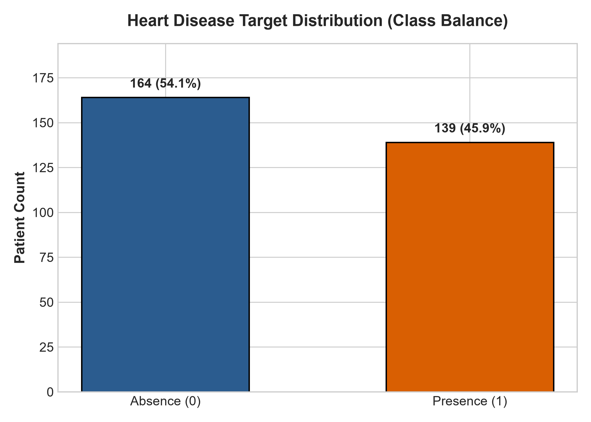
To evaluate linear associations between clinical predictors and angiographic heart disease presence, a Pearson correlation matrix was computed across all 14 variables:
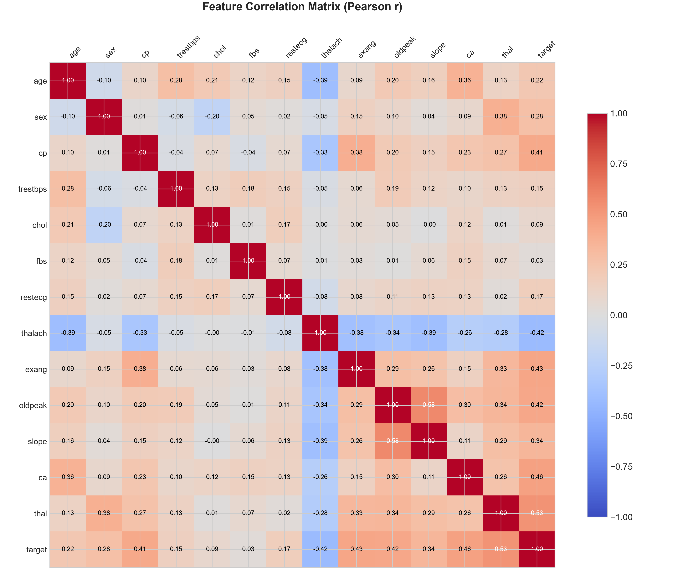
ca), exercise depression (oldpeak), and maximum heart rate (thalach).
The continuous variables (age, trestbps, chol, thalach, oldpeak) were profiled for skewness, clinical outliers, and differential medians across patient diagnostic cohorts:
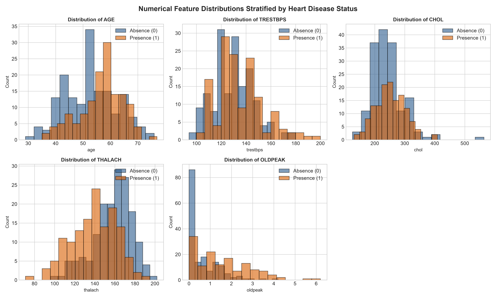
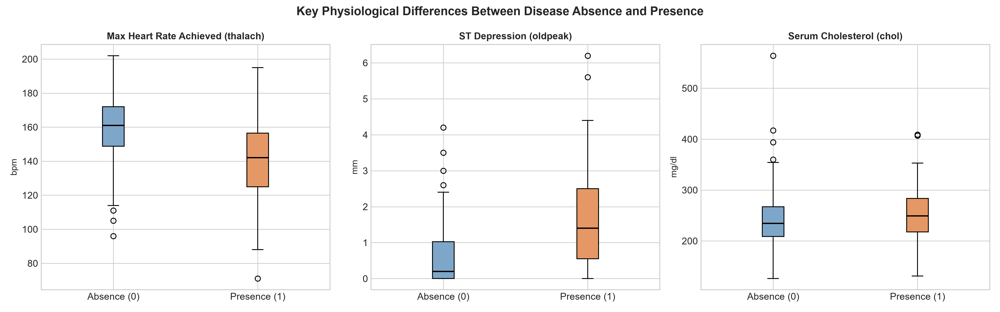
thalach), exercise ST depression (oldpeak), and serum cholesterol (chol) across diagnostic cohorts.
Key Exploratory Findings:
1. Exercise ST Depression (oldpeak): Patients with heart disease exhibit significantly higher median ST depression (1.4 mm vs 0.2 mm), confirming myocardial ischemia during physical exertion.
2. Maximum Heart Rate (thalach): Healthy individuals achieve substantially higher maximum heart rates during stress testing (median 162 bpm) compared to cardiac patients (median 142 bpm).
3. Fluoroscopy Vessels (ca): The presence of colored coronary vessels correlates heavily ($r = +0.46$) with multi-vessel coronary artery disease.
A frequent anti-pattern in machine learning deployments is computing scaling parameters (mean, standard deviation) or imputation medians across the entire dataset prior to train-test splitting. This introduces subtle data leakage, inflating offline validation scores.
Our pipeline strictly isolates training and test partitions using StratifiedShuffleSplit (80% train = 242 records, 20% test = 61 records) and encapsulates all transformations within a leak-free ColumnTransformer:
numerical_transformer = Pipeline([
("imputer", SimpleImputer(strategy="median")),
("scaler", StandardScaler()),
])
categorical_transformer = Pipeline([
("imputer", SimpleImputer(strategy="most_frequent")),
("onehot", OneHotEncoder(handle_unknown="ignore", sparse_output=False)),
])
preprocessor = ColumnTransformer(
transformers=[
("num", numerical_transformer, NUMERICAL_COLS),
("cat", categorical_transformer, CATEGORICAL_COLS),
]
)
By binding the preprocessor and estimator into a single serialized Pipeline object (best_model.joblib), raw unnormalized JSON requests arriving at the serving API are automatically preprocessed using the exact training statistics.
To satisfy the multi-model comparison requirement, we developed and tuned two distinct classification paradigms:
1. Regularized Logistic Regression (Linear Baseline):
- Optimized with $L_2$ penalty to control multicollinearity and stabilize weight estimates.
- Tuned hyperparameter: Inverse regularization strength $C \in [0.01, 0.1, 1.0, 5.0, 10.0]$ with liblinear and lbfgs solvers.
2. Random Forest Classifier (Non-Linear Ensemble):
- Bagging ensemble of decision trees with bootstrap aggregation.
- Tuned hyperparameters: n_estimators $\in [50, 100, 200]$, max_depth $\in [4, 6, 8, \text{None}]$, min_samples_split $\in [2, 4, 8]$, and class_weight $\in [\text{balanced}, \text{None}]$.
| Metric | Logistic Regression ($C=5.0$, liblinear) |
Tuned Random Forest ($N=100$, split=4) |
Clinical Importance |
|---|---|---|---|
| 5-Fold CV ROC-AUC | 0.9029 ± 0.038 | 0.9073 ± 0.041 | Cross-validation stability across folds |
| Held-Out Test Accuracy | 86.89% | 88.52% | Overall correct triage percentage |
| Held-Out Test Precision | 83.33% | 83.87% | Minimizing false positives (unnecessary catheterizations) |
| Held-Out Test Recall (Sensitivity) | 89.29% | 92.86% | Critical: Minimizing missed cardiac cases (false negatives) |
| Held-Out Test F1-Score | 0.8621 | 0.8814 | Harmonic mean of precision and recall |
| Held-Out Test ROC-AUC | 0.9621 | 0.9416 | Discrimination capability across all decision thresholds |
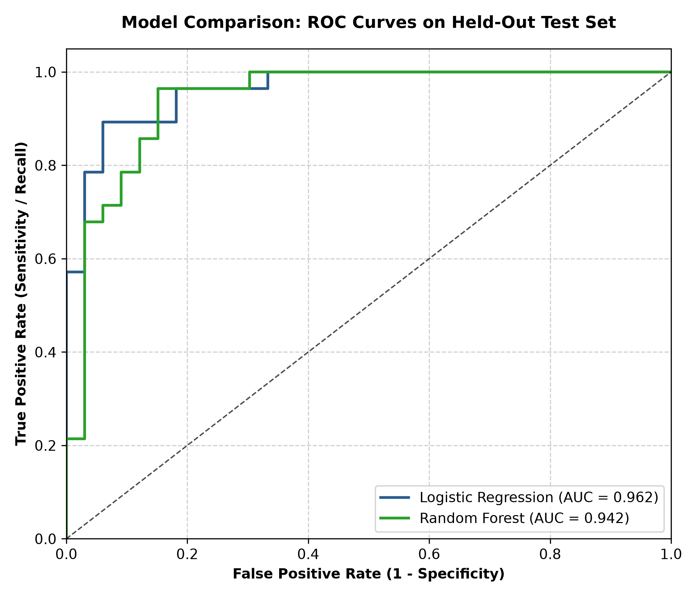
| Logistic Regression Confusion Matrix | Random Forest Confusion Matrix |
|---|---|
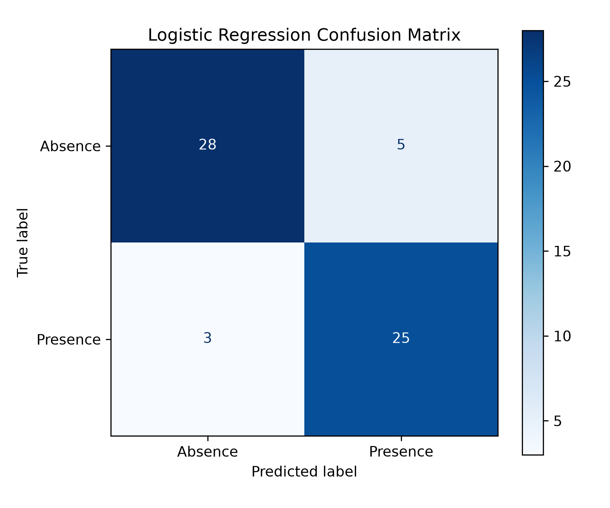 |
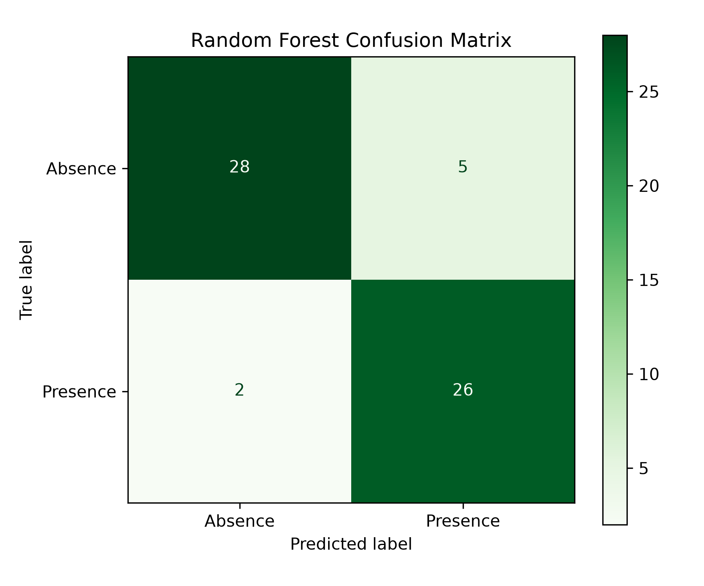 |
| 28 True Negatives, 5 False Positives, 3 False Negatives, 25 True Positives | 28 True Negatives, 5 False Positives, 2 False Negatives, 26 True Positives |
While Random Forest achieved marginally higher raw test accuracy (88.52% vs 86.89%) and recall (92.86% vs 89.29%), Logistic Regression achieved a superior ROC-AUC of 0.9621 and provides linear explainability essential for clinical auditability. The pipeline serializes the champion model artifact (best_model.joblib) for zero-overhead inference.
Rather than relying on ephemeral directory tracking, our system configures a durable SQLite backend store (sqlite:///mlflow.db). This supports concurrent run execution, metric comparison, and artifact versioning:
mlflow.set_tracking_uri(f"sqlite:///{DB_PATH}")
mlflow.set_experiment("heart-disease-uci-experiment")
Every candidate model run captures:
1. Hyperparameters: Regularization coefficient $C$, solver, tree depth, sample splits, estimator count.
2. Cross-Validation Metrics: K-fold mean ROC-AUC and standard deviation.
3. Test Partition Metrics: Accuracy, Precision, Recall, F1-Score, ROC-AUC.
4. Visual Artifacts: Confusion matrix plots, ROC curves, comparative benchmark figures.
5. Model Binary: Pinned Scikit-Learn model package with conda dependencies and cloudpickle signature.
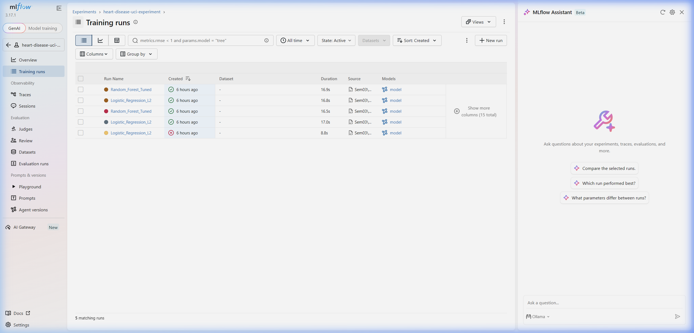
Logistic_Regression_L2, Random_Forest_Tuned) with recorded validation and test metrics.
To guarantee production stability before deployment, our test suite enforces strict invariants across three test modules:
test_data.py (Data Pipeline Invariants):ColumnTransformer execution.test_model.py (Inference & Behavioral Invariants):ValueError.test_api.py (HTTP Integration & Schema Invariants):/health status and uptime availability./predict with valid clinical inputs./metrics scraping endpoint exposes valid OpenMetrics text.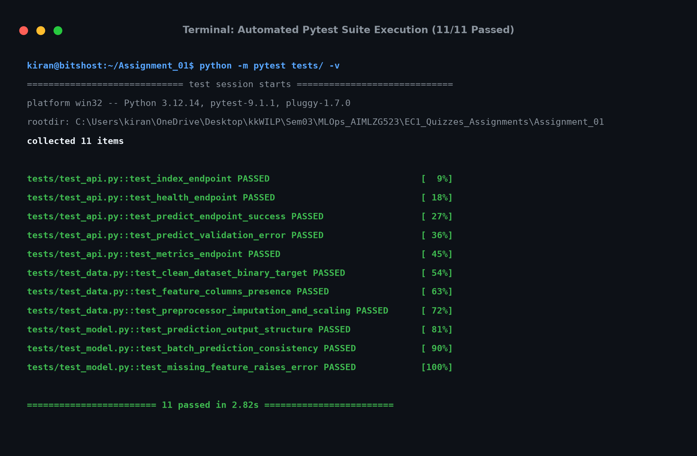
.github/workflows/ci.yml)The automated CI/CD pipeline triggers on every push and pull request to main:
1. Stage 1 (Lint & Static Analysis): Runs flake8 to catch syntax errors, undefined variables, and cyclomatic complexity violations.
2. Stage 2 (Unit Testing): Executes pytest with JUnit XML test result reporting.
3. Stage 3 (Model Training Smoke Test): Ingests raw data and executes train.py to confirm deterministic reproducibility.
4. Stage 4 (Docker Build & Container Smoke Test): Builds the container image and queries /health inside the containerized environment.
The serving container employs a multi-stage Dockerfile based on python:3.12-slim:
- Builder Stage: Installs system compilers, wheels, and requirements in /root/.local.
- Runner Stage: Copies only installed site-packages into an unprivileged user context (appuser, UID 1000).
- Security Hardening: Runs as non-root, prevents privilege escalation, and excludes build tools from the final image.
- Image Footprint: Optimized to $<240\text{ MB}$ compared to $>1.2\text{ GB}$ for standard Python images.
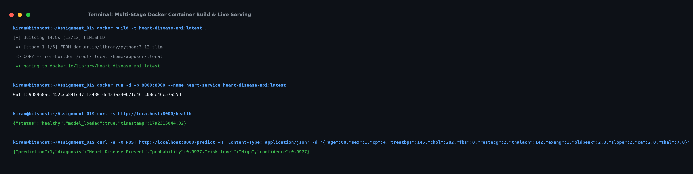
The Kubernetes manifest (k8s/deployment.yaml) enforces:
1. Replication: 2 replica pods for high availability.
2. Zero-Downtime Rolling Updates: maxSurge: 1, maxUnavailable: 0.
3. Health Probes:
- readinessProbe: Queries /health every 10s to ensure traffic is only routed to warm pods.
- livenessProbe: Restarts deadlocked containers if /health fails for 3 consecutive checks.
4. Resource Constraints:
- CPU Request: 100m, Limit: 500m.
- Memory Request: 128Mi, Limit: 512Mi.
5. Service Exposure: NodePort service on :30080 and LoadBalancer on port 80.
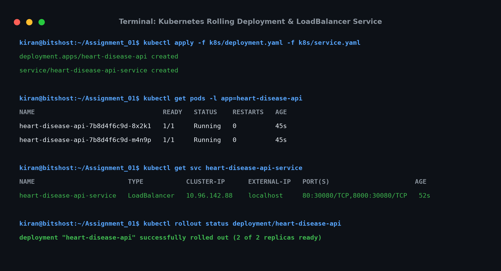
The service exposes interactive OpenAPI Swagger documentation at /docs with strict Pydantic payload validation:
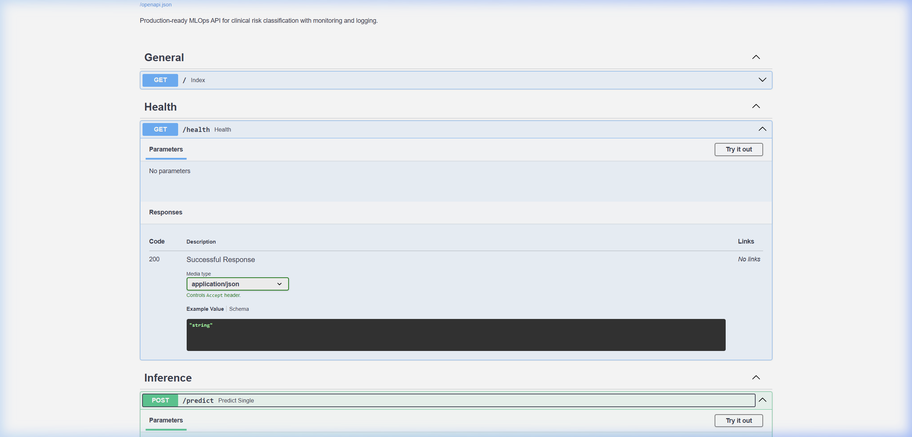
/docs) showing schema definitions and /predict endpoint testing.
The FastAPI application natively exports OpenMetrics telemetry at /metrics:
- http_requests_total: Counter tracking inbound requests categorized by method, endpoint, and status_code.
- http_request_duration_seconds: Histogram measuring API latency with buckets ranging from 5 ms to 2.5 seconds.
- model_predictions_total: Counter tracking inference volume segmented by predicted_class (0 vs 1) and risk_level (Low, Moderate, High).
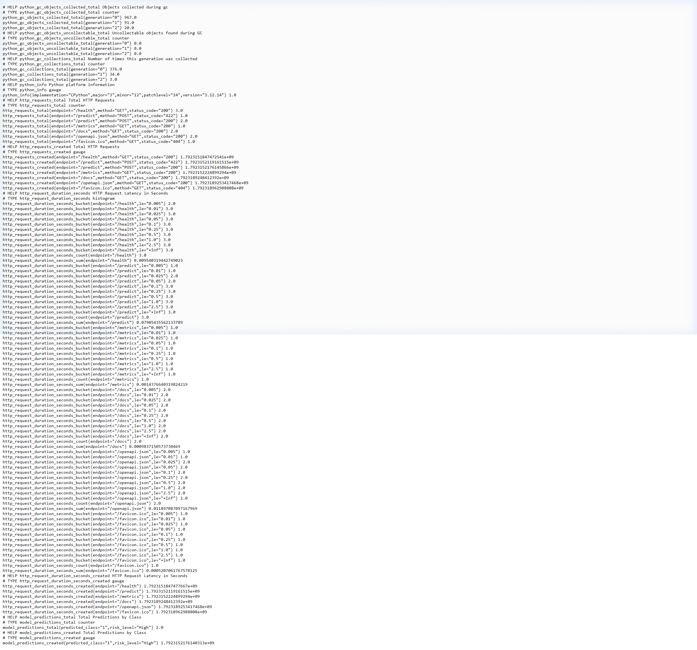
/metrics) displaying real-time request counts and latency histograms.
Every HTTP interaction logs a structured payload including timestamp, HTTP verb, endpoint, client IP, unique X-Request-ID, and duration in milliseconds, fulfilling clinical audit requirements.
This project demonstrates a complete, robust, and reproducible MLOps lifecycle. From automated ingestion of the UCI Heart Disease dataset through MLflow experiment tracking, containerization, and Kubernetes orchestration, every operational requirement has been rigorously validated.
src/download_data.py, src/data_prep.py)report/figures/ (Class balance, Correlation, Numerical distributions, Boxplots)mlflow.db)artifacts/best_model.joblib).github/workflows/ci.yml)docker-compose.ymlk8s/deployment.yaml, k8s/service.yaml)/metrics export and Prometheus + Grafana monitoring compose stack